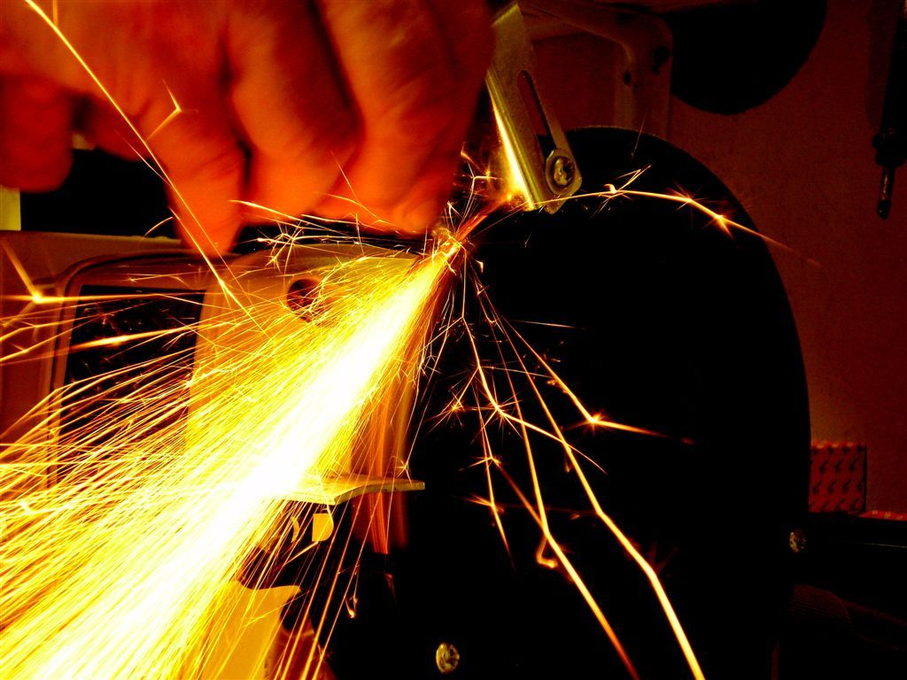
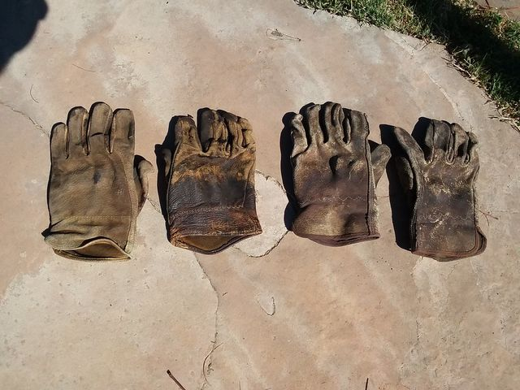
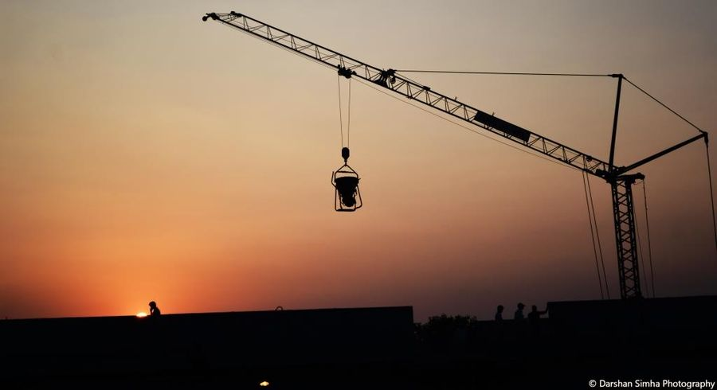

Web má solídnu viditeľnosť v Google (1 242 zobrazení za 28 dní), ale slabú konverziu klikov (CTR 1,53 % vs retail priemer 3–5 %). To je priestor na rast. Pri ~3 hodinách týždenne sa dá za rok dosiahnuť organic revenue 700–1 500 € mesačne.

Reálne čísla z Google Search Console a Google Analytics za posledných 28 dní. Toto je východiskový bod.
1 242 zobrazení za mesiac znamená, že Google indexuje tvoj web a ukazuje ho na relevantné dopyty. Nemusíme začínať od nuly — máme čo optimalizovať.
Ľudia hľadajú priamo tvoj brand, ale neklikajú. Si na pozícii 5,2 — nad tebou je 4–5 iných výsledkov (mapy, recenzie, konkurent). Toto je #1 priorita: oprava prinesie ~+14 klikov mesačne ihneď.
Zo všetkých zobrazení klikne menej ako 2 % ľudí. Pri zdvojnásobení CTR na 3 % by si pri rovnakej viditeľnosti mal ~38 klikov namiesto 19 — bez ďalšej SEO práce, len lepším title/meta description.
Konkrétny problém na riešenie. Buď konkurent obsadil pozíciu, alebo content stagnoval. Audit + úprava obsahu = stop ďalšieho prepadu.
Postupný plán optimalizácie — každá fáza stavia na predošlej. Časový rámec je orientačný, výsledky závisia od konzistencie práce a Google indexing latency.
Cieľom je rýchlo využiť existujúcu viditeľnosť. Stránky, čo už rankujú v top 20, dostanú malý push do top 5. Title/meta rewrites pritiahnu viac klikov pri rovnakých zobrazeniach.
Súčasný title nemá dôvod kliknúť. Nový návrh: „Pracovné odevy a montérky | Doprava zadarmo nad 50 € | Dami". Pridáva výhody, signalizuje akciu. Očakávaný impact: CTR z 1,2 % na 4–6 % @ pos 2 = +50 klikov/mesiac.
79 impressions, 0 klikov. Brand query — perfektný kandidát. Pridať internal link z homepage + jasný menu link v navigácii.
Pozícia 11,8 — page 2. Geo query s vysokým buyer intent. Vytvoriť landing page „Pracovné odevy Piešťany" alebo dedikovanú sekciu s mestom v meta description.
−80 % klikov za mesiac. Pozrieť SERP top 3, porovnať s našou stránkou, doplniť chýbajúci obsah (popis bezpečnostných tried S1/S1P/S3/S5).
Pridať USP: „Skladom · Doručenie do 24 h · 2026" patterny. Cieľ: zdvojnásobiť CTR na top kategóriách (rukavice, obuv, montérky).
Homepage musí linkovať na top 5 kategórií v hlavnom obsahu (nie len v menu). Z každej kategórie linky na 3 najpredávanejšie produkty. Šíri ranking authority.

Po quick wins potrebujeme nový obsah pre nové queries. Rising queries a niche dopyty (HoReCa, antikorová obuv, termoaktívne tričká) sú prázdne pre konkurenciu — first mover advantage.
300+ slov pod product listing — kupujúci sprievodca, certifikácie, materiály, čo si vybrať. Google odmeňuje content depth, používatelia oceňujú expertízu.
Štruktúrované dáta na všetkých 200+ produktoch. Google vie zobraziť cenu, hodnotenie, dostupnosť priamo vo výsledkoch — vyšší CTR a kvalifikovanejší klik.
5 najčastejších otázok pri každom produkte (veľkosť, materiál, certifikácia, garancia). FAQ schema markup → featured snippets v Google.
Stránky pre: „antikorová obuv pre kuchárov", „termoaktívne pracovné tričká", „pracovný overal jednorazový". Niche segmenty s buyer intent + nízka konkurencia.
1 článok / 2 týždne. Témy: „Ako vybrať pracovnú obuv pre svoj odbor", „Ochrana sluchu na stavbe", „Pracovné odevy pre zimu". Long-tail SEO + linkbuilding magnet.

Long-term práca. Backlinks, brand awareness, recenzie a partnerstvá. Tu sa rozhoduje, či sa dostaneš nad konkurentov ako ramirent.sk a pracovne-odevy.sk, alebo zostaneš v ich tieni.
3–5 nových brand mentions / mesiac. Stavebné/HoReCa/priemyselné blogy, branžové portály, B2B katalógy. Cieľ za rok: 30–50 kvalitných backlinkov.
Spolupráca s priemyselnými strednými školami (produkty na praktickú výučbu výmenou za zmienku). Sezónne kampane — „dovybavenie študentov pre prax".
Automatický follow-up e-mail 7 dní po doručení so žiadosťou o recenziu. Cieľ: 100+ recenzií za rok. Schema review → hviezdičky v Google + dôvera.
Workwear má silný B2B segment (firemné odbery, dotácie pre zamestnancov). Dedikované stránky: „Firemné odbery", „Bezpečnosť práce", „Cenové ponuky pre firmy". B2B query = vysoká hodnota leadu.
1 video / mesiac (sprievodca produktom). Instagram Reels s real-life použitím produktov. Social signals → nepriamy SEO benefit + priamy predajný kanál.
Konzervatívny odhad organic revenue z mesiaca 1 do 12. Predpoklady: priemerný košík 60 €, konverzia 1,5–2,5 % (rastie s CRO prácou), 75 % click-to-session rate.
Tieto čísla v dashboarde indikujú, či ideme správnym tempom. Cieľové hodnoty pre 6-mesačný horizont.
Plán predpokladá konzistentnú prácu. Tieto faktory ho môžu spomaliť — dobré vedieť dopredu.
Plán predpokladá 3–6 hodín týždenne dedikovanej SEO práce počas celého roka. Pri nárazovej práci (mesiac áno, dva mesiace nie) sa progress výrazne spomalí — Google ranking je flywheel, treba ho roztočiť a udržiavať v pohybe.
Hlavní hráči: pracovne-odevy.sk, ramirent, sortimo, bezpec.sk. Niektorí majú etablovanú domain authority. Pre top 3 na konkurenčné queries („pracovné odevy") to nebude rok — skôr 18–24 mesiacov. Plán cieli na nikóvejšie a long-tail queries, kde sú reálne šance.
Google robí updates 4–6× ročne, väčšina menších. Občas príde core update, ktorý preráža rankings. Niečo sa nedá kontrolovať — preto staviame na multiple signals (content + linkbuilding + UX + brand), nie len jeden faktor.
Workwear má prirodzené peaky: jar/leto (apríl–jún) a jeseň (september–november) pre zimné odevy. Letné mesiace môžu byť slabšie pre niektoré kategórie. Plán ráta s priemerom — počítaj s lokálnymi výkyvmi.
Kde začať a prečo práve tam.
Quick wins (title rewrites, internal linking, audit padajúcich stránok) sú najlacnejšia a najrýchlejšia časť celého plánu. Hodina práce = ~10 klikov navyše. Po 4–6 týždňoch budú výsledky viditeľné v dashboarde, podľa toho vyladíme fázu 2.
Celkový pohľad: investícia ~150 hodín za rok (cca 3 h týždenne) má potenciál priniesť 8–18 000 € v atribuovanom organic revenue + 3–10 000 € v B2B leads. ROI je výrazne pozitívny, hlavne keď uvážime, že infraštruktúra (dashboard, automatizácia) je už hotová.
Pozri priority tohto týždňa →